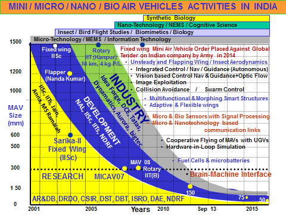

ABOUT NDRF
THE FOCUS OF NDRF WAS WIDENED TO HARNESS THE ENGINEERING TALENT OF THE COUNTRY
NDRF acts as a National platform for Engineers, Scientists and Technologists engaged in Research and Development for building a strong R & D Engineering base in the country. NDRF since its inception has made rapid strides to achieve its role and objectives throughout the country and abroad. This has been possible largely due to the sustained efforts of the past, present and future Chairmen.
Microtechnology
“Microelectronics has transformed the world. Today, complementary micro technologies have emerged in mechanical and optical engineering as Micro Electro- Mechanical Systems (MEMS) and Micro Opto-Mechanical Systems (MOMS). Medical applications involving biology are using bio-MEMS while communication utilizes RF-MEMS. NDRF and Aeronautical Development Agency (ADA) organised a workshop along with the Institute of Smart Structures and Systems in which the three, forums of Industry CII, FICCI and ASSOCHAM participated. NDRF continuously promoted activities and projects in this area which should lead to India becoming a leading design and manufacturing base in the estimated world market of Rs.15,000/- crores by 2010 for these devices. They will be incorporated in almost all engineering goods of the future. 4 proposals in MEMS have been initiated by NDRF through appropriate agencies.”
Nano-biotechnology
“A nano-biotechnology project, a bottom-up approach, promoted by NDRF for the development of a simple imager using a light sensitive protein was sanctioned by DBT to the Centre for DNA Fingerprinting and Diagnosis (CDFD), Hyderabad and Molecular Design Research Centre, Mumbai. NDRF has also been instrumental in the formation of Biosensors Society (India), to bring together biology and engineering. NDRF is the first institutional member of BS (I). Biosensors have tremendous applications in medicine, agriculture and industry. The activity will involve among others, NPL (Delhi), Institute of Microbial Technology (Chandigarh), CFTRI (Mysore), DRDE (Gwalior), bigtec (Bangalore) and Vijay Mallya Science Research Foundation (Bangalore).”
Nanotechnology
“Nanotechnology will revolutionize the very way the world functions and nano initiatives have been implemented not only in USA, Europe and Japan but also in China and India. NDRF promoted education and training in this area in engineering colleges. A short term course in Micro and Nanotechnology initiated by NDRF was organized by PES Institute of Technology, Bangalore from 22 July 2002 to 30 October 2002 in association with BEL, bigtec and Virtual 3D Info Pvt. Ltd.”
Mini and Micro Air Vehicles
“Mini Air Vehicles (500 - 1500 mm) and Micro Air Vehicles (100 - 300 mm) with maximum all up weights of the order of 5 kg and 0.5 kg respectively have extensive applications in the following areas. Disaster management-Fire, Flood, Earthquakes, Landslides, Gas Leaks, Search and Rescue. Security / Defence - Surveillance, Mine detection, Crowd monitoring, Traffic control, Detection of Toxic agents. Commercial - Agriculture, TV and Cinema R & D – Evaluation of new concepts The Project Centre was proposed to be setup at NDRF for Micro Air Vehicles ”
NATIONAL PROGRAMME OF MICRO AIR VEHICLES (NP-MICAVs)
The Institution of Engineers (India) took a decision to form IEI University at Karnataka, towards which it was decided that NDRF would be the Nodal Centre to prepare all the necessary documentation. However, subsequently with a decision to start the University at ESCI, Hyderabad, the plan at Karnataka was dropped.
